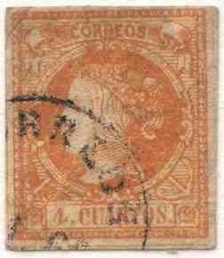
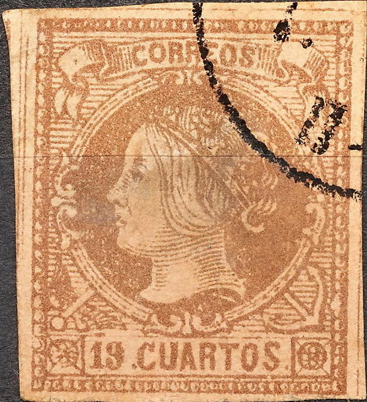
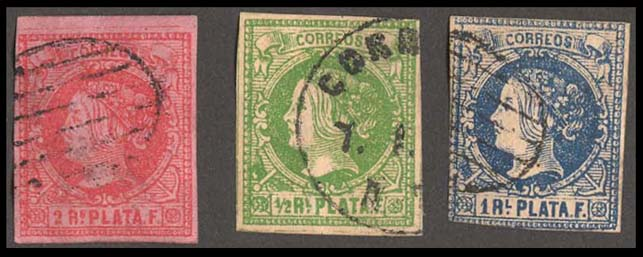
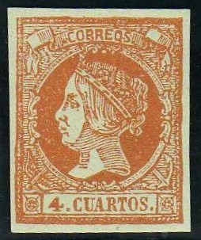
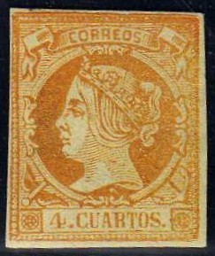
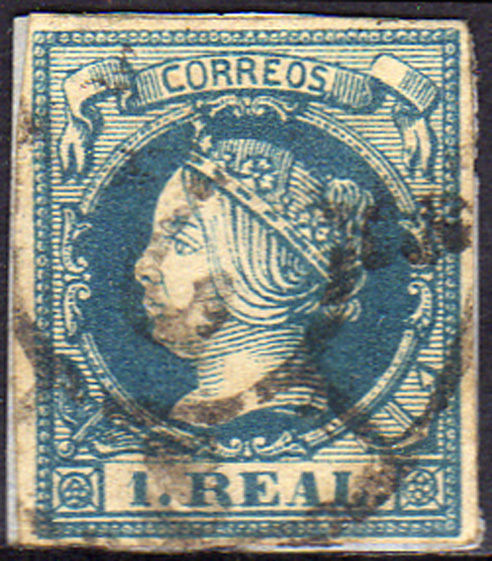

{kind=link}


(Forgeries with the 'white curl' behind the head, images obtained from the forgeries idenfication site of Bill Claghorn: http://geocities.com/claghorn1p/ )
Return To Catalogue - Spain Queen Isabella 1860 issues
Note: on my website many of the
pictures can not be seen! They are of course present in the
catalogue;
contact me if you want to purchase it.
Forgeries exist, Album Weeds mentions 2 forgeries. In the first forgery the curl of the hair at the back of the Queen's head is very white.

(Forgeries with the 'white curl' behind the head, images obtained
from the forgeries idenfication site of Bill Claghorn:
http://geocities.com/claghorn1p/ )



These forgeries often have a "CORREOS 7.1.60. II-III"
cancel or a "ADRA 25 DIC 61 MURCIA" cancel.


A bogus 12 c green value with the same "ADRA 25 DIC 61
MURCIA" cancel.
These forgeries are often cancelled with "CORREOS" in a circle, but I've also seen an elliptic cancel with horizontal lines inside ('Parilla cancel' as shown in the 2 c stamp).

In the second forgery mentioned in Album Weeds, there are only four lines to the left of "CORREOS", in the genuine stamps, there are 5 lines (with a sixth one partly covered).
Fournier sold a forgery of the 19 cuartos. I have no further information at this moment about this forgery.
Fournier forgery as shown in a Fournier Album.


Deceptive forgeries of the 19 c (probably Fournier):
The right hand stamp has the "SALAS DE LOS INFANTES BURGOS 7
FEB 65" cancel as shown in the Fournier Album (the word
'SALAS' looks more like 'CALAC').
Fournier cancels, reduced sizes
Another forgery of the 12 c:

The forger Segui made a forgery of at least the 2 r value.
Segui forgery
In these forgeries, in my opinion, there are some smudges at the
right hand bottom side of the bust of the Queen. Also, I think
that the dot behind 'REALES' is too close to the border to the
right of it. These might be Segui forgeries (I'm not sure
though).

Sperati forgery and distinguishing characteristic (broken line
right of "S" of "CORREOS")
Sperati made a forgery of the 19 c value; In this forgery the second line to the right of the "S" of "CORREOS" is broken, the fifth line of the front of the neck (counted from below) is also partly missing. Another picture can be found at http://www.graus.com.
There are also postal forgeries (to deceive the postal authorities). In the book 'Postal Forgeries of the World' by H.G. Leslie Fletcher, 13 (!) different postal forgeries of the 4 cuartos are described, 4 different forgeries of the 2 reales, one forgery of the 12 cuartos and one forgery of the 1 real value.

Postal forgery with very pronounced shading on the face of the
Queen. There is a white outline at the neck of the Queen. I
believe this is postal forgery Type 4 of Fletchers book.


Postal forgery used in Madrid, this is type 6 of Fletchers book.
The word 'CORREOS' is quite badly done, the word 'QUARTOS' is
also badly done (too tall), especially the final 'S'.


Type 8 postal forgery of Fletchers book. The 'S' of 'CORREOS' is
badly done


Two postal forgeries with the 'S' of 'CUARTOS' misshapen. Note
that the left and right hand side of the banner are more straight
than in the genuine stamps.


(Other postal forgeries of the 4 c value)
If I'm well informed several postal forgeries of the 4 cuartos value were made with stolen printing plates.



Only postal forgeries recorded for the 1 R value and 12 c value.
The banderole in the upper left corner is too far away from the
frame when compared to a genuine stamp. These two forgeries were
apparently made by the same forger. These forgeries are known to
have been used in Barcelona. Next to it a postal forgery of the 2
R value also made by the same forger.

Other postal forgery of the 2 r stamp
{kind=link}
{kind=link}
{kind=link}
{kind=link}